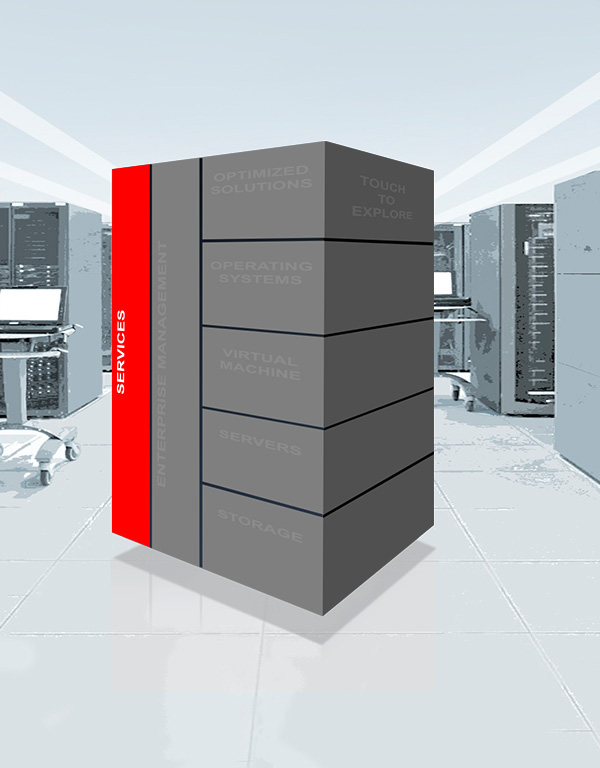

ORACLE SERVICES
Benefits
Optimization services for Oracle servers deliver the guidance you need to plan, deploy, and keep your Oracle server technology optimized for maximum availability. With intimate knowledge of Oracle tools and best practices, Oracle consultants and engineers provide the right knowledge at the right time to help mitigate risk and maximize the value of your Oracle technology investment.
Oracle offers IT services, support, and training throughout the entire lifecycle of new Oracle product adoption and data center optimization.
Highlights
- Speed technology implementation and ROI through Oracle’s production-readiness and production-optimization services
- Reduce technology adoption risk with Oracle’s service engineers, who deliver a highly skilled technology implementation approach based on Oracle’s service methodologies
- Optimize mission-critical data center environments by leveraging Oracle’s global knowledgebase of architectural and technology best practices
Assets
- Systems Modernization Services
- Migration Factory
- Oracle Premier Support for Servers
- Oracle Solaris 11 Services
- Web Link
- Advisory Services, Architecture, Solution Design, and Migration Services Web Link
- Advisory Services, Architecture, Solution Design, and Migration Services PDF
- Systems Modernization Services and Tailored Mission-Critical Support
- Complete Product Training Web Link
- Complete Product Training PDF
- Complete End-to-End Managed Cloud Services Web Link
- Complete End-to-End Managed Cloud Services PDF
- Oracle Premier Support for Systems Web Link
- Oracle Premier Support for Systems PDF